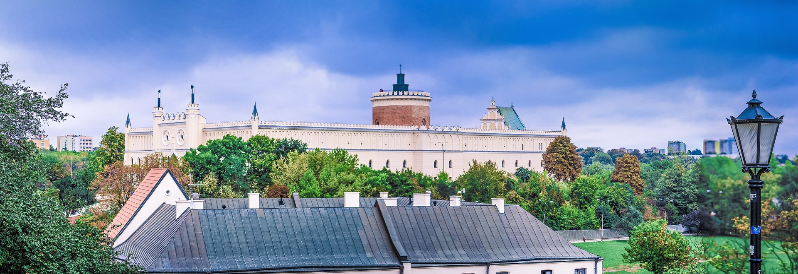
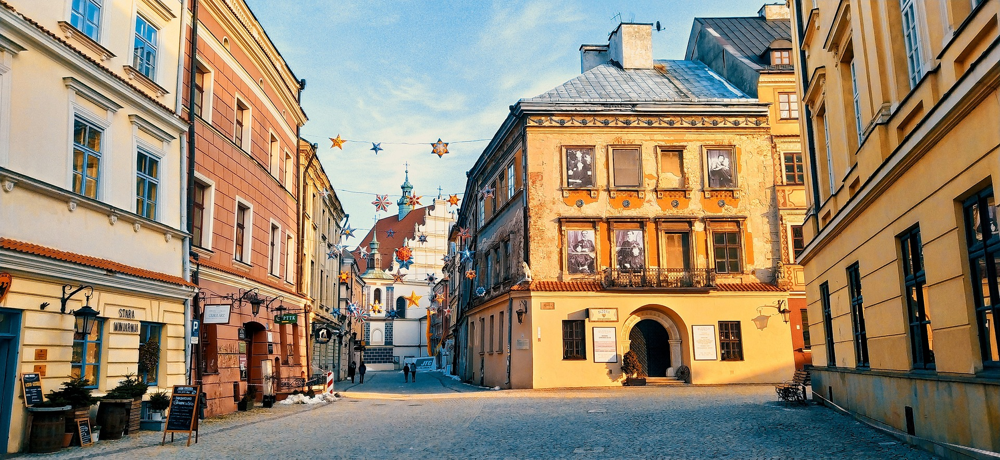
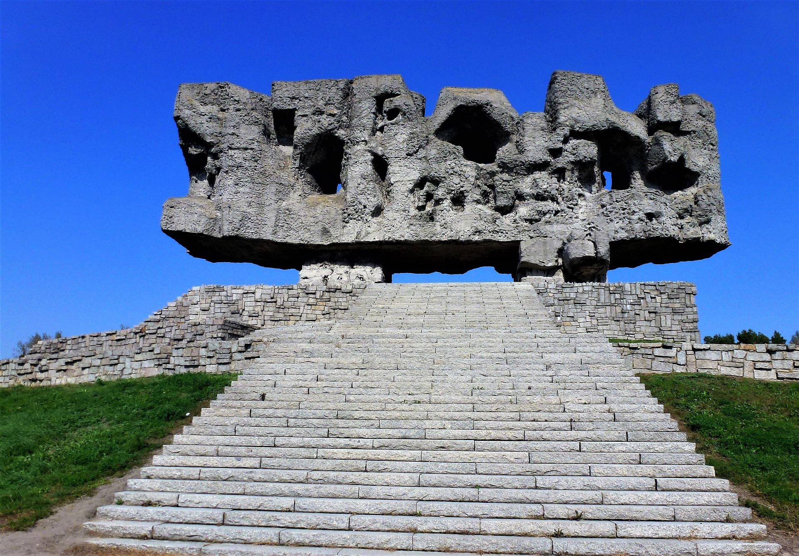

Atrakcje Lublina
Zamek Lubelski
pierwotnie zbudowany w XII wieku, wielokrotnie przebudowywany. W XVI w. był rezydencją królewską, w XVII w. zniszczony. W XIX w. odbudowany jako więzienie (1831-1954). Od 1957 r. siedziba Muzeum Narodowego w Lublinie.
Starówka
Na terenie Starego Miasta znajdują się liczne zabytki, w tym pozostałości murów miejskich (bramy: Krakowska i Grodzka oraz Baszta Gotycka), renesansowe kamienice, dawny ratusz (Trybunał Koronny) stojący na środku rynku, archikatedra i Wieża Trynitarska, bazylika dominikanów, czy Teatr Stary. Wewnątrz murów znajduje się plac Po Farze, a przed Bramą Krakowską - plac Łokietka. Poza granicami murów miejskich na terenie dzielnicy administracyjnej Stare Miasto znajduje się Zamek z Kaplicą Zamkową.
Muzeum na Majdanku
Państwowe Muzeum na Majdanku powstało już jesienią 1944 r. na części terenu byłego obozu koncentracyjnego, było zatem pierwszą tego typu instytucją na świecie. Ustawą Sejmową z 2 lipca 1947 r. otrzymało status centralnej instytucji państwowej. W XXV rocznicę wyzwolenia Majdanka na terenie byłego obozu stanął monumentalny pomnik, poświęcony ofiarom nazizmu, autorstwa inż. arch. Wiktora Tołkina. Monument składa się z dwóch głównych części: pomnika-bramy oraz wielkiego mauzoleum zawierającego prochy ludzkie z terenów obozowych. Muzeum opiekuje się również wielkim archiwum pozostałym po administracji SS. W 2004 roku dyrekcji Muzeum podporządkowano na prawach filii odnowione Muzeum w Bełżcu. Inna część obozu była wykorzystana jako obóz jeniecki dla Niemców i obóz dla Polaków.
